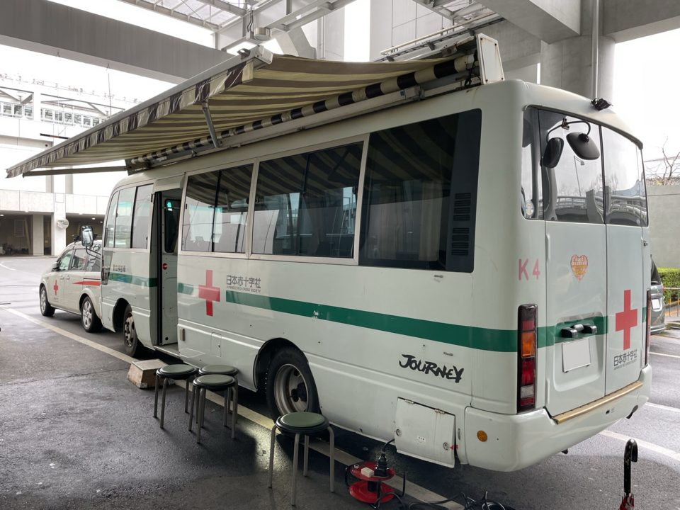

社会人お得技ノート④ 医療
要点まとめ
ラベル: 新制度・改正 改悪・注意 終了
高額な医療費への備え
改悪・注意 高額療養費の上限引き上げと年間上限の新設（2026年8月〜）
月の上限が上がり、年間上限53万円が新設された[3]
年収約370〜770万円の区分の月額上限
変更前：80,100円＋(総医療費−267,000円)×1%変更後：85,800円＋(総医療費−286,000円)×1%
2026年8月から
マイナ保険証なら、限度額適用認定証の事前申請は原則不要
窓口での支払いが自己負担限度額までになる[6]
健保組合の「付加給付」で、自己負担がさらに減ることも
健保組合が規約で独自に行う上乗せ給付[7]
高額介護合算療養費は申請が必要
医療と介護の自己負担を合算し、基準額を超えた分を支給[11]
薬代・受診のコツ
改悪・注意 ジェネリックがある先発品を希望すると「特別の料金」がかかる
特別の料金は2026年6月から価格差の1/2相当に[2]
特別の料金（患者の負担）
変更前：価格差の1/4変更後：価格差の1/2相当
2026年6月から
リフィル処方箋で通院回数を減らせる
一定期間内に最大3回まで繰り返し使える処方箋[14]
薬局の開局時間外の調剤には加算がある
開局時間外の調剤は所定点数に加算、深夜は200%[15]
申請しないともらえない給付
埋葬料・葬祭費
協会けんぽの埋葬料・家族埋葬料は5万円[17]
献血

終了 献血カードは廃止され、「ラブラッド」での受付に統一
献血カード・手帳の新規発行と更新は2026年1月4日で終了[21]
今回確認できなかった点
- 国民健康保険の葬祭費の自治体ごとの金額は、確認できなかったため掲載していません。
出典（23件）
閲覧日はいずれも2026年11月1日
- 高額療養費制度の見直しについて（厚生労働省）
- 後発医薬品のある先発医薬品（長期収載品）の選定療養について（厚生労働省）
- 高額療養費の年間上限の新設（厚生労働省）
- （参考）高額療養費制度の見直しについて（厚生労働省）
- 高額療養費（全国健康保険協会（協会けんぽ））
- 限度額適用認定証（全国健康保険協会（協会けんぽ））
- 健康保険法 第53条（e-Gov法令検索（デジタル庁））
- 医療費負担額と給付金（日本製鉄健康保険組合）
- 高額療養費（SCSK健康保険組合）
- 健康保険法 第193条（e-Gov法令検索（デジタル庁））
- 高額介護合算療養費（全国健康保険協会（協会けんぽ））
- 高額介護合算療養費制度について知りたい（さいたま市）
- 長期収載品の選定療養について（全国健康保険協会（協会けんぽ））
- 長期処方・リフィル処方せんについて（掲示用資料）（厚生労働省）
- 調剤点数表（別表第三）（厚生労働省）
- 令和8年度診療報酬改定について（厚生労働省）
- ご本人・ご家族が亡くなったとき（全国健康保険協会（協会けんぽ））
- 健康保険給付の時効（全国健康保険協会（協会けんぽ））
- 国民健康保険法 第58条（e-Gov法令検索（デジタル庁））
- 国民健康保険法 第110条（e-Gov法令検索（デジタル庁））
- 献血カード・献血手帳の新規発行および更新の終了について（日本赤十字社）
- 「ラブラッド」アプリの一時利用停止について（日本赤十字社）
- よくあるご質問（献血）（日本赤十字社）